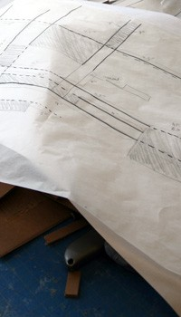

The School of Architecture and Interior Design bases admission decisions on a balanced consideration of the following indications of excellence:
- A baccalaureate degree from a recognized college or university
- Official transcripts from previous college coursework.
- Note: Successful candidates have earned, on average, a GPA of 3.30(based on a 4.00 scale).
- A portfolio of creative work. The portfolio is an opportunity to demonstrate your imaginative and critical thinking talents. Creativity occurs in all fields so the content does not have to be architectural if your background is in another discipline. Written project statements to accompany visual work are usually very helpful to the committee.
- 3 letters of recommendation from persons who are in a position to evaluate your abilities and your potential for success as a graduate student.
- A brief resumé of your academic and professional experiences
- Note: Your resumé should indicate both educational and professional accomplishments.
- A two-page statement of your interest in graduate study in Architecture. This should be a concise, articulate presentation of your academic and career goals, and any specific interests you have in architectural topics for graduate research and design. It should reflect your prior intellectual and professional engagement with these issues, and may also provide some additional perspective on the work illustrated in the portfolio.
- The Graduate Record Exam (GRE). Successful candidates have earned the following average scores: verbal 500; quantitative 650; analytic 4.5. The ETS University code is 1833. You do not need a department code.
- Applicants whose native language is not English should achieve at least 600 (paper version) or 250 (computer version) on the Test of English as a Foreign Language (TOEFL).
|
 |